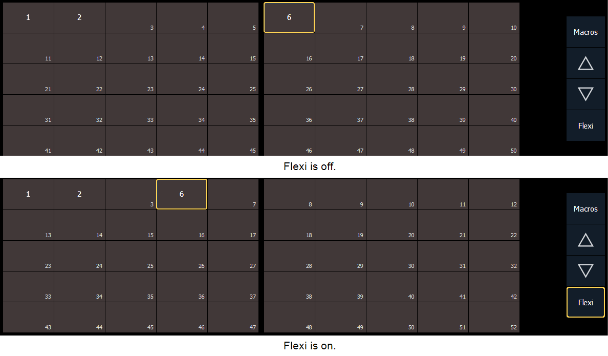

Direct selects can be placed into a flexi mode, which will remove empty tiles. {Use Flexi} needs to be enabled in the Direct Selects configuration menu. See Direct Selects Configuration Menu .
When enabled, the {Flexi} button will display in the direct selects display.

When in flexi mode, the {Flexi} button will be outlined in gold.
Note: A single empty direct select tile may remain if the adjacent direct select tiles are not sequential. This is to allow an easy way to insert a new direct select between the existing ones.